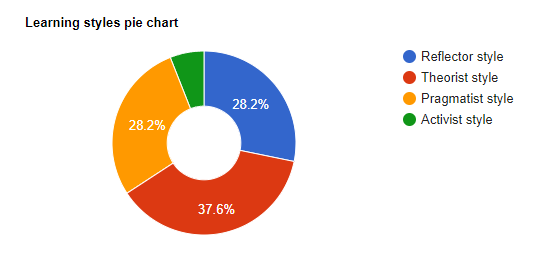

Myers-Brigs Type Indicator
Looking at the results, the only trait that has any real significant distinction is Extraverted / Introverted, and you might be able to say the same for Judging / Prospecting.
Ok, but what do these results mean?
Turbulent Defender
The website describes “defenders” as being receptive to change, reserved yet possess competent people skills, usually conservative, sensitive and analytical.
This group can be further broken down into “turbulent” and “assertive”. Turbulent defenders have been found to procrastinate but at the same time be meticulous. They are known to get the job done and also go above and beyond what is expected. They have been found to actively anticipate problems and when something goes wrong blame themselves.
The main obstacle for this group is that they tend to downplay their achievements as they are dedicated and humble. This can make them vulnerable to being exploited by others.ISFJ-T - these are the initials of each dominant trait I scored in.
Sentinel - is a feature that is derived from having both the Observant and Judging traits.
Constant Improvement- is a feature that is derived from having both the Introverted and Turbulent traits.
(16Personalities, 2021)
Learning Styles Quiz
 The results indicate that I lean towards the Theorist style. The Pragmatist and Reflector styles have the same result and the percentage is less than a 10% difference from the Theorist style.The quiz describes the theorist style as being one that prefers problems to be solved in a logical manner, and one that favours objectiveness and reasoning. The people grouped under this style like to assemble rational theories based on varying facts of a specific topic. They prefer to organise things in a logical manner.
(EMTRAIN, 2021)
Big Five Personality Test

According to the descriptions in the results given:
Factor 1 - Extroversion - my low score might indicate I am a shut-in.
Factor 2 - Emotional Stability - my very average percentile suggests that my emotional stability is “average”.
Factor 3 - Agreeableness - scoring higher and pretty average again when looking at percentile could imply I’m just as friendly and optimistic as the majority of people.
Factor 4 - Conscientiousness - the high score and higher percentile suggest that I’m above average when it comes to being careful and diligent.
Factor 5 - Intellect/Imagination - raw score looks around 50% but according to the percentile, compared to others I tend to be more traditional and conventional.
(Open-Source Psychometrics Project, 2021)
What do these results mean to me?
Some of these results and explanations I can relate to, and others I can’t. However it was an interesting exercise. Last time I took this test, I was back in high school and I followed the advice of the results which suggested that I go into the previous program which I ended up withdrawing out of. So for the most part, they haven’t really changed my view on how I see the world. I will say that it was interesting to see how the results differed from when I had done them previously.
If I ever need to describe myself, these results might be able to help me express what I’m trying to convey. They can also aid with giving a brief and objective idea of who I am and my “personality”.
How do these results affect working in a team?
I feel like these results will help the team get a better grasp on what each team member is really like and aid with communication, thus making it a more efficient and enjoyable team environment.
For me, it will help with conveying my strengths and weaknesses and hopefully those of the other group members. As such, each member should be able to find a task tailored for them. Personally, and from the results shown, I am quite agreeable, open to change, and I don’t mind taking a back-seat role in making decisions. I am also reliable and will get things done before the deadline. Moreover, since I prefer to do things in a logical manner, this should aid with the planning of our future project.
I know that I much prefer to get the decisions out of the way and just start working on the project. In a prior group project, 70% of the time was spent on talking about how and why we should go about the project rather than actually doing the work.